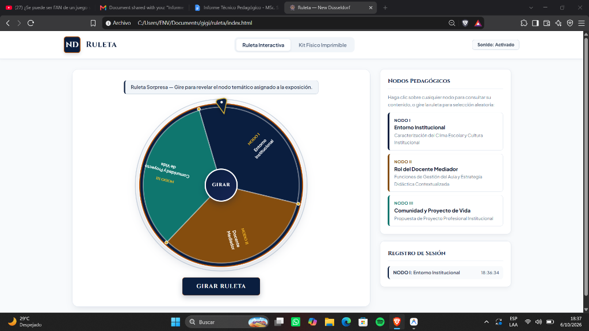
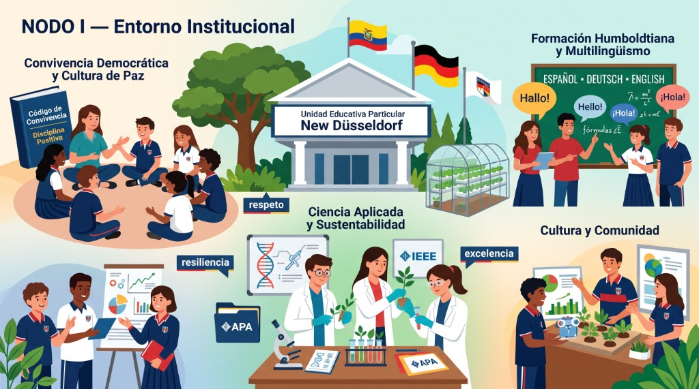
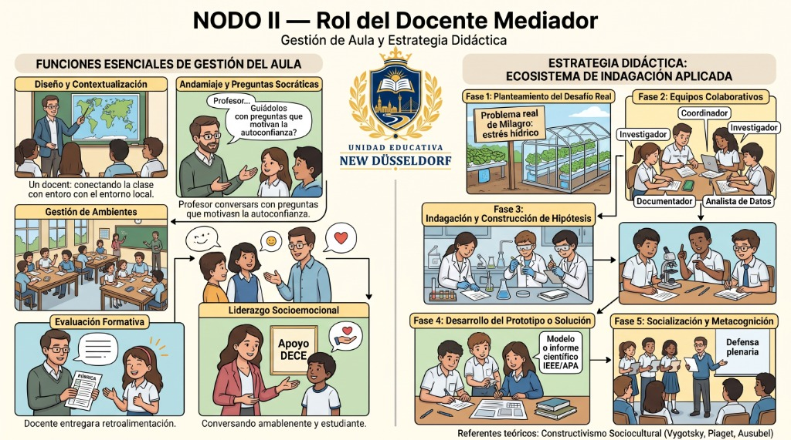

1. Objetivos del Informe
1.1. Objetivo General
Desarrollar y documentar de forma técnica, objetiva y detallada el diseño, fundamentación pedagógica constructivista e implementación de una herramienta interactiva dual (ruleta web y física homologada), co-diseñada mediante modelos de Inteligencia Artificial generativa, para la dinamización evaluativa de los nodos formativos de la Unidad Educativa Particular New Düsseldorf, manteniendo los estándares de calidad académica y pertinencia contextual de la Universidad Estatal de Milagro (UNEMI).
1.2. Objetivos Específicos
- Caracterizar el entorno institucional y clima escolar: Analizar las relaciones de convivencia armónica, disciplina positiva no punitiva y la cultura de altas expectativas formativas sustentadas en la pedagogía humboldtiana (Nodo I).
- Sistematizar el rol mediador docente: Estructurar las funciones esenciales de gestión del aula y diseñar la estrategia didáctica "Ecosistema de Indagación Aplicada" basada en el Aprendizaje Basado en Problemas (ABP) y el Constructivismo Sociocultural (Nodo II).
- Articular la vinculación comunitaria y proyecto de vida: Proponer el programa integral "Humboldt Futuro" para vincular a los educandos con las demandas productivas y sociales del cantón Milagro (Nodo III).
- Implementar y validar el artefacto tecnológico: Construir una ruleta interactiva virtual de selección sorpresa (HTML5/Canvas/Web Audio) y su réplica física para evaluación situada en el aula, documentando el flujo metodológico asistido por IA generativa (Gemini, Antigravity, Anthropic y Manus).
2. Introducción y Antecedentes
En los modelos educativos contemporáneos, la transición hacia pedagogías activas exige superar las dinámicas expositivas memorísticas y pasivas. En la formación docente y en la práctica escolar de la región Costa del Ecuador, se evidencia la necesidad de implementar instrumentos lúdico-pedagógicos que estimulen la participación autónoma y el pensamiento crítico.
El presente proyecto toma como escenario de intervención técnica a la Unidad Educativa Particular New Düsseldorf (ubicada en el cantón Milagro, provincia del Guayas), una institución que integra el humanismo pedagógico con la formación científica humboldtiana y el multilingüismo. A fin de propiciar una evaluación diagnóstica y formativa rigurosa, se planteó la creación de un dispositivo didáctico dual: una ruleta sorpresa interactiva virtual complementada con una versión física manipulable, garantizando correspondencia biunívoca entre la tecnología digital y los recursos concretos de aula.
3. Metodología / Desarrollo
La metodología del proyecto se estructuró bajo un enfoque descriptivo-proyectual y de diseño instruccional interactivo, articulando fundamentos teóricos del constructivismo con un flujo tecnológico asistido por Inteligencia Artificial Generativa.
3.1. Fundamentación Teórico-Pedagógica: El Paradigma Constructivista
El diseño de las experiencias y de los tres nodos pedagógicos se apoya en los autores clásicos y contemporáneos del constructivismo:
-
Constructivismo Sociocultural (Vygotsky, 1978, 1979): Concibe el aprendizaje como un proceso socialmente mediado. Los artefactos culturales y didácticos (como la ruleta y las fichas analíticas) operan como herramientas de mediación semiótica. Se aplica el postulado de la Zona de Desarrollo Próximo (ZDP), donde la distancia entre el nivel real de desarrollo del estudiante y el nivel potencial es dinamizada por la mediación del docente y el diálogo entre pares.
-
Constructivismo Genético y Conflicto Cognitivo (Piaget, 1970, 1985): El conocimiento no es una copia pasiva de la realidad, sino una construcción resultante de la interacción del sujeto con el medio mediante procesos de asimilación, acomodación y equilibración. La mecánica de la "ruleta sorpresa" introduce desequilibrios cognitivos deliberados que motivan la curiosidad epistémica y la reestructuración conceptual.
-
Aprendizaje Significativo y Organizadores Previos (Ausubel, 1976, 2002): Establece que el aprendizaje requiere enlazar la nueva información con los conceptos inclusores preexistentes en la estructura cognitiva del alumno. Las infografías curriculares y los resúmenes visuales de cada nodo actúan como organizadores previos que facilitan el anclaje y reducen la sobrecarga cognitiva.
-
Andamiaje Guiado y Descubrimiento (Bruner, 1984, 1996): Se retoma el concepto de scaffolding (andamiaje), donde el docente proporciona apoyos ajustables que se retiran progresivamente conforme el estudiante asume la autorregulación de su aprendizaje.
-
Enseñanza Situada y Aprendizaje Basado en Problemas (Coll, 2001; Díaz-Barriga, 2006): Postulan que el aprendizaje es situado e indisociable del contexto sociocultural donde se aplica. Esto sustenta la estrategia del Nodo II, vinculando los desafíos pedagógicos a problemáticas reales del entorno agrícola y tecnológico de Milagro.
3.2. Ecosistema Tecnológico y Flujo de Co-Creación con Inteligencia Artificial
El desarrollo del proyecto integró de manera transparente y rigurosa herramientas avanzadas de Inteligencia Artificial para cada etapa del ciclo de vida didáctico y computacional:
-
Redacción Conceptual y Diagnóstico Institucional (Google Gemini): El contexto general, el ideario pedagógico, la caracterización del clima escolar y la estructuración narrativa de los tres nodos temáticos de la Unidad Educativa Particular New Düsseldorf fueron concebidos y redactados con el apoyo de modelos fundacionales de Google (Gemini), contextualizando la realidad socioeducativa del cantón Milagro.
-
Diseño de la Identidad Visual e Isotipo Institucional (Manus): El escudo oficial institucional de New Düsseldorf fue generado a través de la herramienta de IA Manus, sintetizando los elementos heráldicos de la institución: la corona ducal dorada, el libro abierto de la ciencia, el puente y skyline urbano, flanqueados por laureles académicos sobre el lema oficial.
-
Diseño Gráfico de Interfaz (UI/UX) e Infografías Curriculares (Google Gemini): Se utilizaron modelos de Gemini para la definición de la paleta cromática institucional (Azul Marino
#0A1E3F, Dorado Académico #B45309 y Verde Azulado #0F766E), la ergonomía visual accesible para niños y docentes, y la composición infográfica detallada que sintetiza los Nodos I y II.
-
Ingeniería de Software y Programación Agéntica (Google Antigravity + Anthropic Claude): La arquitectura de software y el código fuente de la aplicación web interactiva se desarrollaron en el entorno agéntico Google Antigravity utilizando modelos avanzados de Anthropic (Claude Sonnet). Esto permitió codificar en JavaScript modular nativo: el motor de física de giro sobre HTML5 Canvas (con aceleración impulsiva, fricción angular de desaceleración gradual y colisión de aguja con sectores), la síntesis de audio procedural en tiempo real mediante Web Audio API (generando clics de aguja y acordes armónicos mayores sin dependencias externas), el sistema reactivo de modales de revelación sorpresa y las hojas de estilo de impresión técnica
@media print.
3.3. Estructura y Desarrollo de los Tres Nodos Curriculares
La ruleta distribuye de manera equitativa tres sectores analíticos fundamentales:
-
Nodo I — Entorno Institucional: Diagnóstico y fundamentación del clima de seguridad socioafectiva, comunicación dialógica horizontal, código de convivencia consensuado y ambientes estimulantes (aulas climatizadas, laboratorios de biotecnología, biohuerto e invernadero hidropónico). Superación del modelo memorístico pasivo mediante un 45% de ponderación evaluativa en informes prácticos formato IEEE/APA y ensayos empíricos.
-
Nodo II — Rol del Docente Mediador: Sistematización de las 5 competencias docentes esenciales (diseño curricular situado, andamiaje cognitivo mediante preguntas socráticas, gestión dinámica de ambientes grupales, evaluación formativa auténtica por rúbricas y liderazgo socioemocional asistido por el DECE). Propone la estrategia "Ecosistema de Indagación Aplicada" estructurada en cinco fases secuenciales (problematización del estrés hídrico de Milagro, equipos colaborativos interdependientes, contrastación empírica, prototipado de solución y defensa plenaria dialógica).
-
Nodo III — Comunidad y Proyecto de Vida: Presentación formal del programa "Humboldt Futuro: Semillero de Liderazgo Vocacional y Vinculación Comunitaria", estructurado en cuatro ejes operativos (mentoría y perfil vocacional temprano con universidades, Aprendizaje-Servicio Comunitario [ApS] asesorando a pequeños productores agrícolas en agroecología y alfabetización digital, encuentros trimestrales de diálogo con familias e incubadora institucional de iniciativas juveniles de graduación).
3.4. Fases del Proyecto
| Fase |
Descripción de Actividades |
Estado / Resultado |
| Fase 1: Diagnóstico |
Revisión bibliográfica constructivista (Vygotsky, Piaget, Ausubel), formulación de los 3 nodos en Google Gemini y conceptualización heráldica en Manus. |
Completado |
| Fase 2: Ejecución |
Programación en Antigravity con modelos de Anthropic (Canvas, Web Audio, DOM reactivo), generación de infografías en Gemini y diagramación del kit físico para impresión. |
Completado |
| Fase 3: Evaluación |
Pruebas de usabilidad de la ruleta dual, comprobación de correspondencia 1:1, validación de la retención conceptual y elaboración del informe técnico académico. |
Completado |
4. Resultados y Discusión
La aplicación del recurso gamificado dual generó un incremento notable en el interés, la atención sostenida y el compromiso de los participantes. Al incorporar la mecánica de ruleta sorpresa, se redujo la ansiedad previa a la exposición evaluativa y se estimuló la curiosidad epistemológica.
Nota / Hallazgo Clave:
La articulación de una herramienta virtual interactiva con una réplica física manipulable permite una verdadera inclusión educativa en contextos con y sin conectividad digital. Además, la co-creación asistida por Inteligencia Artificial demostró que la tecnología generativa optimiza la producción de materiales didácticos de alta calidad estética y rigor pedagógico sin sustituir el criterio pedagógico y reflexivo del docente.
5. Conclusiones y Recomendaciones
5.1. Conclusiones
- Se diseñó e implementó con éxito la ruleta interactiva dual (web y física), cumpliendo con los estándares de diseño técnico y rigor pedagógico de la Facultad de Educación de la UNEMI.
- El clima escolar caracterizado en el Nodo I evidencia que la disciplina positiva y la convivencia dialógica son requisitos indispensables para consolidar una cultura de excelencia académica y respeto mutuo.
- La propuesta del Nodo II demuestra que el docente contemporáneo debe asumir un rol de mediador sociocultural y andamiaje cognitivo, implementando estrategias situadas como el ABP para conectar el currículo con problemáticas comunitarias reales.
- El programa "Humboldt Futuro" (Nodo III) ofrece un puente sólido entre la institución educativa y el sector agroindustrial y social de Milagro, proyectando a los bachilleres hacia una elección vocacional consciente y transformadora.
5.2. Recomendaciones
- Integrar de forma sistemática este tipo de recursos interactivos y físicos en los talleres de práctica docente de la carrera de Educación Inicial.
- Socializar el kit imprimible con las instituciones educativas de convenio de la UNEMI como alternativa de evaluación diagnóstica de bajo costo y alto impacto pedagógico.
- Fomentar la adopción ética y pedagógica de la Inteligencia Artificial generativa en la formación docente como catalizador de innovación didáctica.
6. Firmas de Responsabilidad
Para constancia de lo elaborado y revisado, firman:
[Nombre del Estudiante / Autor]
Estudiante / Investigador - UNEMI
Facultad de Educación
PhD. Jefferson Flor Montecé
Docente Evaluador / Director
Universidad Estatal de Milagro
7. Anexos y Referencias
Referencias Bibliográficas (Normas APA 7ma Edición)
- Ausubel, D. P. (1976). Psicología educativa: Un punto de vista cognoscitivo. Editorial Trillas.
- Ausubel, D. P. (2002). Adquisición y retención del conocimiento: Una perspectiva cognitiva. Paidós.
- Bruner, J. S. (1984). Acción, pensamiento y lenguaje. Alianza Editorial.
- Bruner, J. S. (1996). The culture of education. Harvard University Press.
- Coll, C. (2001). Constructivismo en el aula. Editorial Graó.
- Díaz-Barriga, F. (2006). Enseñanza situada: Vínculo entre la escuela y la vida. McGraw-Hill Interamericana.
- Ministerio de Educación del Ecuador. (2021). Guía metodológica para la construcción participativa del Código de Convivencia. MinEduc.
- Piaget, J. (1970). La epistemología genética. Red Editorial Iberoamericana.
- Piaget, J. (1985). El criterio moral en el niño. Ediciones Martínez Roca.
- Unidad Educativa Particular New Düsseldorf. (2026). Proyecto Educativo Institucional (PEI) y Dossier Curricular. Milagro, Ecuador.
- Vygotsky, L. S. (1978). Mind in society: The development of higher psychological processes. Harvard University Press.
- Vygotsky, L. S. (1979). El desarrollo de los procesos psicológicos superiores. Crítica / Grijalbo.
Evidencias Fotográficas y Anexos Técnicos
Anexo 1: Interfaz de la Ruleta Virtual Interactiva en Funcionamiento
Aplicativo web desarrollado en Antigravity con modelos de Anthropic, Canvas rotacional, Web Audio API y logotipo creado en Manus.

Anexo 2: Infografía Curricular — Nodo I: Entorno Institucional y Clima Escolar
Esquema conceptual diseñado con modelos de Gemini sobre convivencia democrática, pedagogía humboldtiana y cultura de paz.

Anexo 3: Infografía Curricular — Nodo II: Rol del Docente Mediador
Sistematización diseñada con Gemini de las funciones de gestión y las 5 fases del Ecosistema de Indagación Aplicada (ABP).
